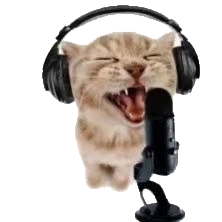
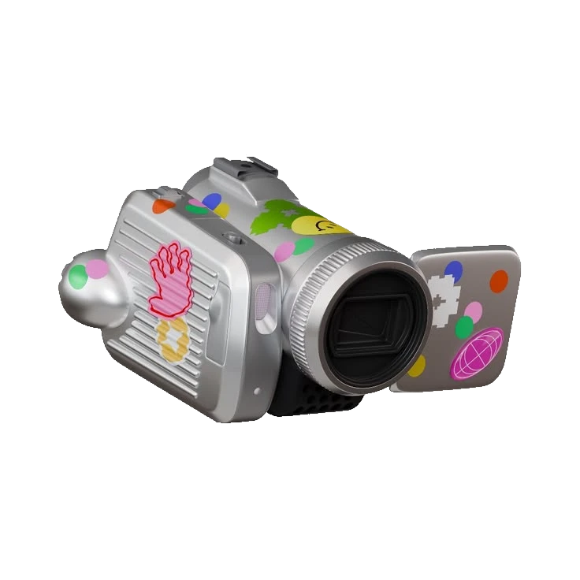
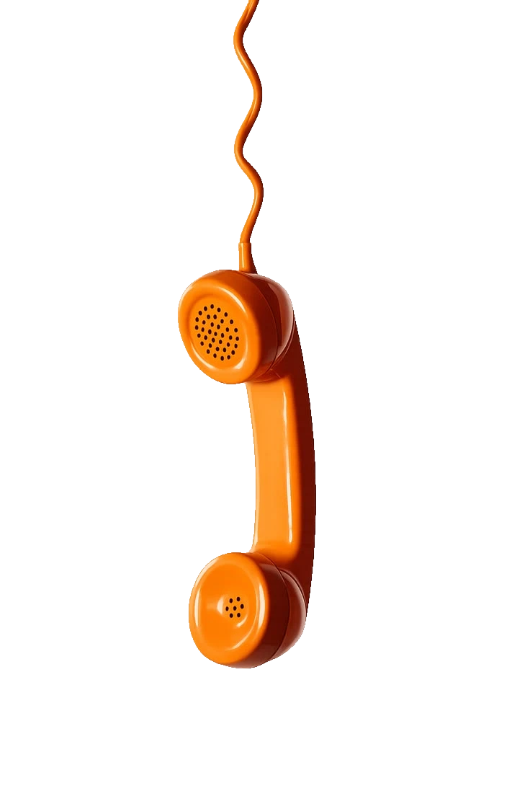

Idealizado Wingrison, com o apoio de toda a equipe Entre Tempos.
@wingrison
como o podcast surgiu

A ideia nasceu de um jeito bem simples: numa tarde comum, voltando da escola pra casa, dois alunos do terceiro ano Murilo e Wingrison foram conversando sobre como aquele ano letivo já estava quase no fim. Foi Wingrison quem trouxe a ideia à tona: entre risadas e memórias, veio aquela sensação de que ainda restavam coisas que os dois queriam ter feito, projetos que tinham ficado só na vontade.
E seria muito bom, os dois concordaram, se ainda desse tempo de tirar pelo menos uma dessas ideias do papel.
"Seria muito bom se a gente conseguisse fazer."
a frase que começou tudoMurilo, que já era o programador por trás da Entre Tempos, pegou aquela ideia e foi atrás: por que não trazer um podcast pra dentro da revista? Foi então que ele conversou com Cícera carinhosamente chamada de Cicinha idealizadora do projeto da revista. Ela amou a ideia na hora, e, dali pra frente, foi história.


O podcast é gravado dentro da própria escola, numa sala que não estava exatamente parada, mas também não era bem aproveitada. Os materiais já existiam ali só que a falta de organização e de iniciativa fazia com que quase nada daquilo fosse usado de verdade. Não era um espaço pensado pra podcast, mas, olhando bem, era exatamente o que faltava pra um.
A equipe se organizou, arrumou o espaço do zero e transformou aquele cômodo pouco usado num estúdio de verdade, com direito a microfone, iluminação e um clima de conversa de gente grande.
Mais do que gravar episódios, a ideia é deixar um projeto que continue vivo bem depois que essa turma se formar que sirva de espaço pra outros alunos contarem suas histórias, ano após ano. É esse o sonho por trás de cada gravação: que o Entre Tempos Podcast dure bastante, e por muitos anos.
Idealizado Wingrison, com o apoio de toda a equipe Entre Tempos.
@wingrison